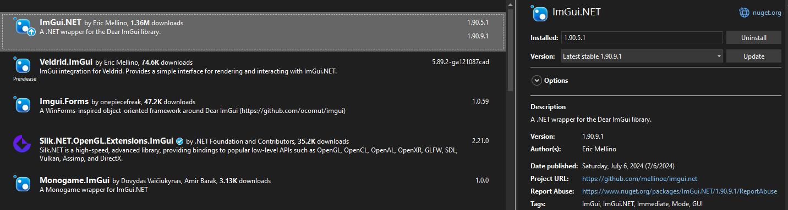
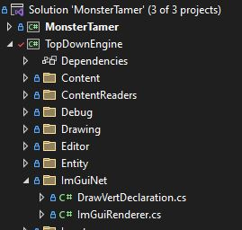
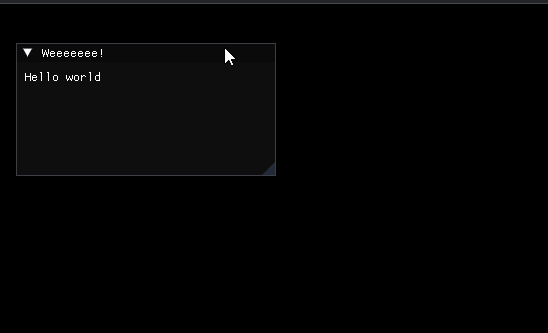

The building of the game/Engine's core systems has been slow but steady. Sprites, Animated Sprites, TextureAtlases, Tilemaps, Tilesets, Heightmaps, and other odds and ends have been fairly easy to draft up and get some code running for. However, I'm reaching a point where mocking up senarios to test these new systems/features is taking an increasingly large amount of my work time. So I decided it was time to put some of the core systems on hold and actually work on tooling! Since the whole goal of this project is for it to test and grow my programming skills I had an idea pretty early on that I would try to patch together some of my own tools. While I could use Tiled or Ogmo Editor (both of which I would recommend) and integrate those into the workflow/pipeline for my game, I think tooling can be very fun to work on and I wanted to challenge myself to create most of my tools, even if I end up using some third party tools here or there.
Now making tools requires some GUI code, which I don't have any of at the moment, and also requires a good understanding of how GUI works and is best organized (which I also don't have). So instead of being a psycho and creating my own janky GUI library I made the easy decision of using a library I have a bit of experience in from my days of learning C++: ImGui. ImGui stands for Immediate Mode GUI (and is in fact not a way of describing yourself as gooey which I think of every time I see it), and this style of creating user interfaces is perfect for a programmer. To grossly oversimplify: it relies on the idea of defining the GUI through procedural code that runs and renders every frame from scratch like a normal render-loop. While this method has its cons in terms of how easily tweakable the design is, it is perfect for creating non-user facing UIs. There is one problem. ImGui is a C++ library and my game is, indeed, not a C++ project but a C# project. Lucky for me, an absolute gem of a person made a wrapper library called 'ImGui.NET'. I don't know how this magic works but according to the Github page it is built on top of an exposed C API which sounds very interesting and I would love to learn how things like that work, but I'll have to put that on the backburner for now.
Integrating the library is very simple, since it has an activly maintained NuGet package. I just searched it up, found its Github page, then read the instructions and got the NuGet package. I added it to the TopDownEngine project in my solution since I intend to make these tools reusable and, therefore, all the code should live in the Engine project, not the game.
Just because the integration was dead simple doesn't mean there were not considerations though. First, ImGui is not a renderer. ImGui outputs textured triangles, as the Github page explains. So I need to find a way to render those triangles using the Monogame/XNA renderer (which will luckily have a simple fix as well). Second, as with a lot of niche engine features I won't want the tools to ship with the game, so they need to be written in a form that allows me to build ImGui.NET, and the tools out of release builds. This second issue shouldn't be a huge compilicated problem so I'll put it on the TODO list and move back to the first problem: rendering.
ImGui is very intellegently designed, and therefore doesn't couple itself to any particular renderer. It instead trusts the user of the library to integrate ImGui into whatever renderer they are using, or have written themselves. While this probably is at least somewhat interesting, and not too time consuming, ImGui.NET has a couple sample renderer integrations for common use-cases. I lucked out again and was able to use the sample Monogame integration. At first I cloned the Samples project and included it as part of my solution. I only wanted a very small portion of the code however, so I opted instead to copy the two code files I needed and credit and link-to the original github project to cut down on external dependencies.
Once this was in I wrote up a quick "Hello World" test just to make sure it worked and sure enough everything went smoothly!
Now some structure needs to be made for game versus editor mode, or some combination of both, who knows what exactly I'll choose to do! But that will be its own topic of dicussion in a potential future post, but the tools have now been added so after that its on to making tools!